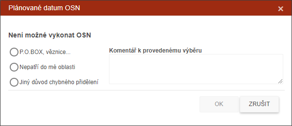

Odmítnutí spisu.
Inspektor má možnost spis odmítnout. Spis bude odložen k vyřešení Supervizorem. Pro rychlé řešení musí inspektor vložit informaci o důvodu vrácení spisu. U položky "Jiný důvod..." je nutné do komentáře vepsat důvod vrácení.

Supervizor rozhodne o oprávněnosti odmítnutí spisu a následně spis vrátí inspektorovi či jeho rozhodnutí potvrdí a odešle spis na centrálu.